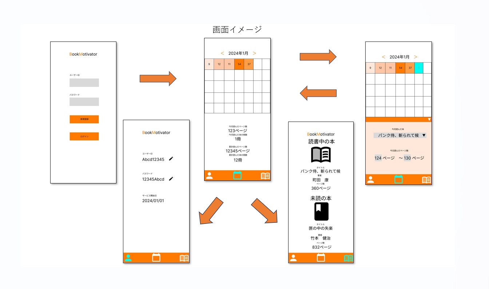

制作中作品
Book Motivator（仮）
システム概要
- システム開発目的
「本を読むことに対する動機付け」及び「自分の読書量の一目での可視化」を実現する。 - 開発に至った経緯
彼女が「本を読みたいが挫折してしまう」という悩みを持っており、趣味のウォーキングで使用している歩数管理アプリのように、カレンダーで読書量が可視化できるアプリが欲しいと考えていたことから。 - 現状の課題
自分がいつどれだけ読書したかを可視化できず、読んだことに対する達成感が得られにくい。（一冊読めば達成感はあるが、細かいスパンで達成感を得ることができないため継続できない） - 課題に対する解決策
読書量をカレンダーで可視化。多く読んだ日は色を変えるなど、一目で努力が見えるようにする。
※現在制作中。2024年3月末ごろ完成予定。詳しくは以下の要件定義書をご参照下さい。